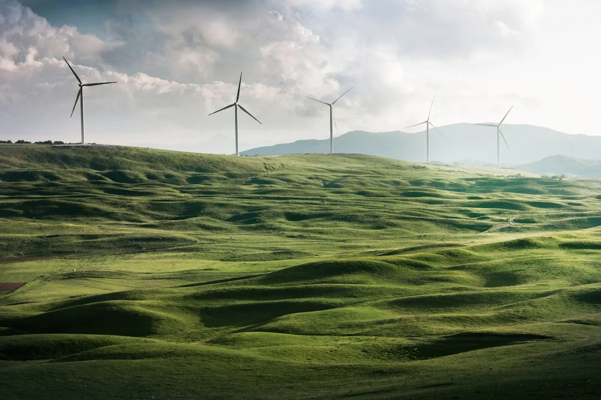
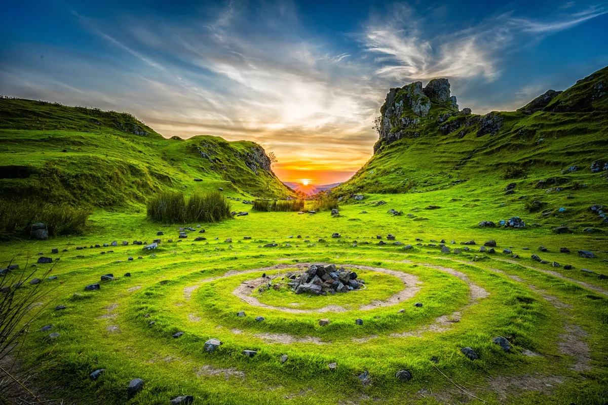

Leadership

Dr. Mara Lindqvist
Chief Executive Officer
TIDALUX was founded in 2014 by a team of marine engineers and oceanographers united by a single conviction: that tidal energy is the most reliable and predictable renewable power source on Earth. Unlike solar and wind, tides operate on an astronomical cycle that can be forecast with absolute precision centuries in advance.
We design, build, and operate tidal energy stations at premier tidal sites around the world — locations where the interaction of ocean currents, coastal geometry, and lunar gravity creates predictable, concentrated flows of kinetic energy.
Our turbines are engineered to work in harmony with marine ecosystems, with slow-rotation designs that protect wildlife and minimal seabed footprint.

Since our first installation at the Pentland Firth in Scotland — one of the world's strongest tidal races — we have expanded to 18 active stations across the North Atlantic, the English Channel, and the Bay of Fundy.
Combined capacity now exceeds 240MW, with another 180MW under construction at three additional sites.
